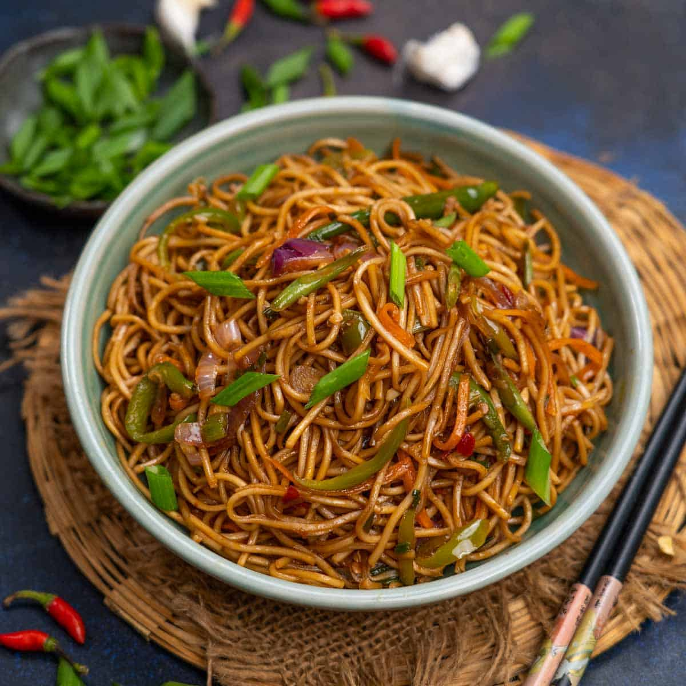
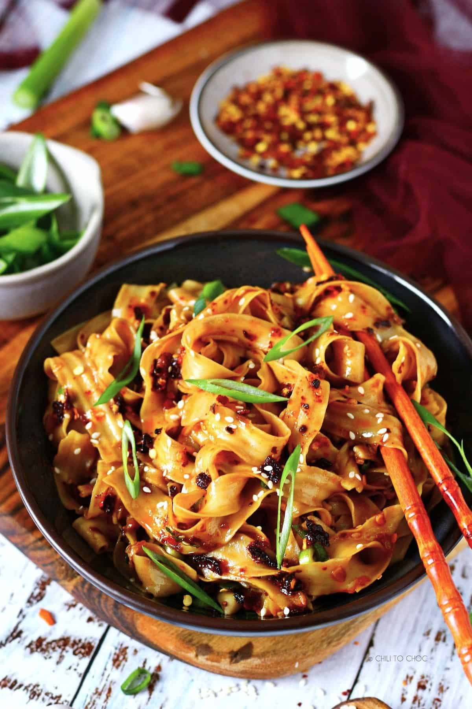

Spicy Chilli Garlic Noodles
Home

Description
Chilli garlic noodles are a quick and flavorful dish packed with bold, aromatic spices. This recipe features stir-fried noodles tossed with a savory sauce made from garlic, crushed red chilli, soy sauce, and a touch of sesame oil. Add your favourite crisp vegetables, such as bell peppers, carrots, or spring onions, for extra crunch and color, and top with your choice of protein or extra veggies. Quick to prepare and endlessly customizable, this dish is a comforting favourite for spice lovers, whether served as a standalone meal or alongside other Asian-inspired dishes.
Ingredients
- 200g noodles (egg, rice, or wheat)
- 200g smoked back bacon
- 2 tbsp olive oil
- 6-8 garlic clovoes, finely chopped or minced
- 2-3 red chillies, finely chopped (alternatively, 2 tbsps crushed red chilli flakes)
- 1 cup whole plum tomatoes
- 8-10 small shallots, diced
- 1 tbsp soy sauce (adjust to taste)
- 1 tbsp chili sauce (adjust to taste)
- 1 tsp vinegar
- 1 tsp lemon juice
- 1 tbsp basil
- 1/2 tsp sugar
- 2-3 tbsps sesame oil
- 2-3 spring onions, chopped (greens and whites separated)
- (Optional) 1 cup mixed vegetables (e.g., bell peppers, carrots, cabbage, or bean sprouts), julienned
- (Optional) Sesame seeds or crushed peanuts for garnish
- Salt and black pepper to taste
Steps
- Cook the Noodles
- Boil the noodles according to the package instructions. Drain and rinse under cold water to prevent sticking. Reserve a cup of noodle water and set aside.
- Prepare the Sauce
- In a small bowl, mix the soy sauce, chilli sauce, vinegar, sugar, and sesame oil. Set aside.
- Cook the Protein
- Heat the olive oil in a wok or large skillet over medium-high heat.
- Add the bacon to the wok and cook for 2-3 minutes until crispy brown. Drain excess fat and set aside, leaving some of the juices in the wok.
- Sit-Fry Aromatics
- Add the chopped red chillies, stirring constantly for about 30 seconds, until fragrant.
- Cook the Vegetables
- Add the tomatoes to the wok and allow them to cook, undisturbed, for 2 minutes or until they start to blister. Stire them once and then allow them to cook, undisturbed, for 1 more minute.
- Stir in the garlic and shallots and cook for 30 seconds longer or just until fragrant, stirring constantly and being careful not to let the garlic burn. Remove skillet from the heat and stir in lemon juice and basil. Set aside.
- (Optional) Add the mixed vegetables and stir-fry for 2-3 minutes until the vegetables are slightly tender but still crisp.
- Toss the Noodles
- Add the cooked noodles to the wok, along with the cooked garlic and shallots, followed by the sauce prepared from earlier. Toss everything together until the noodles are evenly coated.
- Season and Finish
- Add salt and black pepper to taste. Stir in the chopped spring onion whites. Cook for another mninute.
- Serve
- Transfer the noodles to a serving plate. Garnish with spring onion greends, sesame seeds, or crushed peanuts if desired.
- Serve hot and enjoy!
